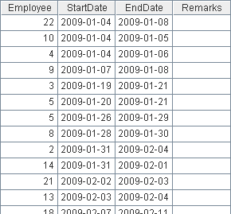
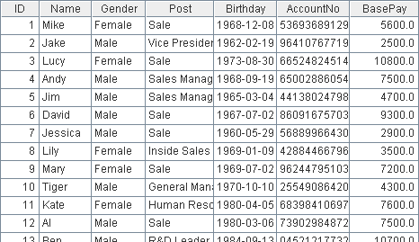

13. Employees Who Have Taken a Leave Longer Than 2 Consecutive Days Three Times in a Year
l Problem
The LeaveRecords table is used to record the leaves of employees in 2009, including the start date and end date for each leave of every employee.

The Employees table is as below:

Please find employees who have asked for a leave longer than two consecutive days 3 times within the year.
l Tip
General steps: Firstly, compute the duration of each leave for every record in the LeaveRecords table. Then by using the coordinate translation of the sequence, search for the consecutive 3 records with the durations of leaves longer than 2 days.
1. Group the LeaveRecords table by Employee, and create a new table sequence including the Length field. Calculate the duration of each leave and create a sequence composed of these results.
2. Call the select function to filter out the consecutive 3 records with the Length value greater than 2
3. Retrieve the employee names of the above selected records from the Employees table for easier viewing.
l Code
|
|
A |
|
|
1 |
=file("C:\\txt\\LeaveRecords.txt").import@t() |
The LeaveRecords table |
|
2 |
=file("C:\\txt\\Employees.txt").import@t() |
The Employees table |
|
3 |
=A1.group(Employee;~.( interval(StartDate,EndDate)):Length) |
Group the LeaveRecords table by Employee, and calculate the duration of leave for each record |
|
4 |
=A3.select(Length.count(#>2 && ~>2 && Length(#-1)>2 && Length(#-2)>2)>0) |
Select the consecutive three records with the Length values greater than 2 |
|
5 |
=A2.keys(ID) |
|
|
6 |
=A4.(A2.find(Employee)).(Name) |
Replace ID with Name for easier view |
l Result